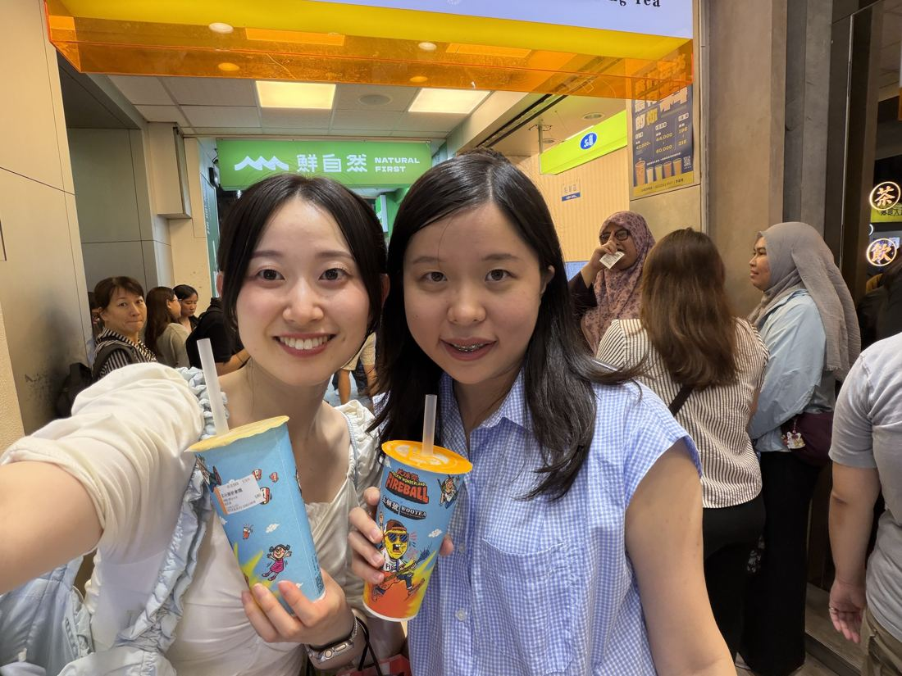
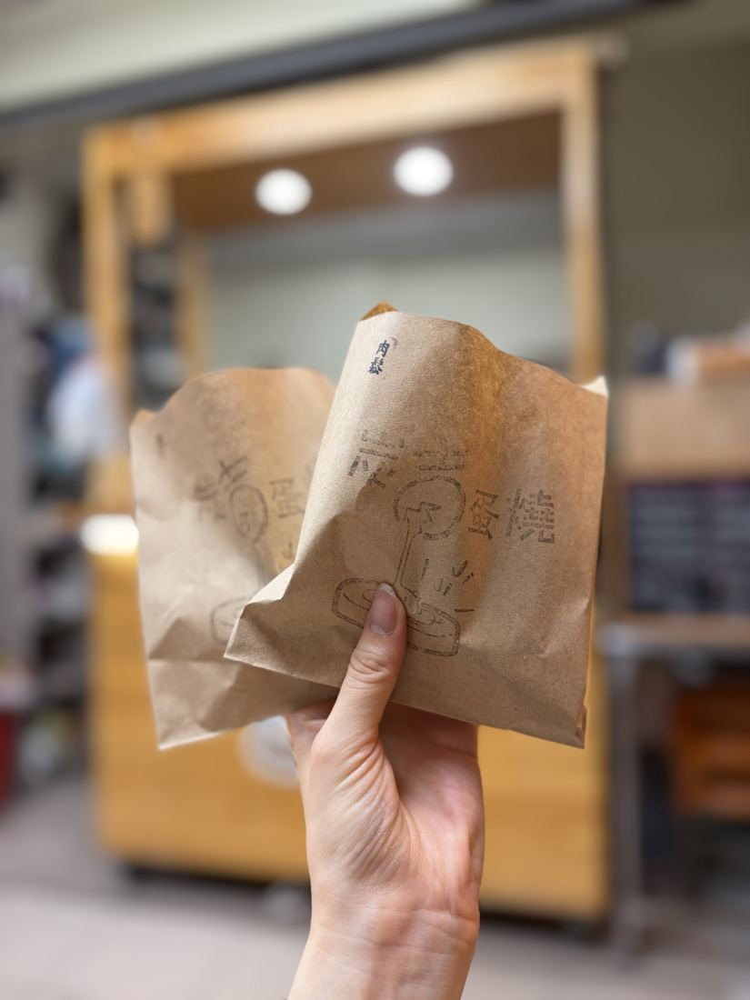
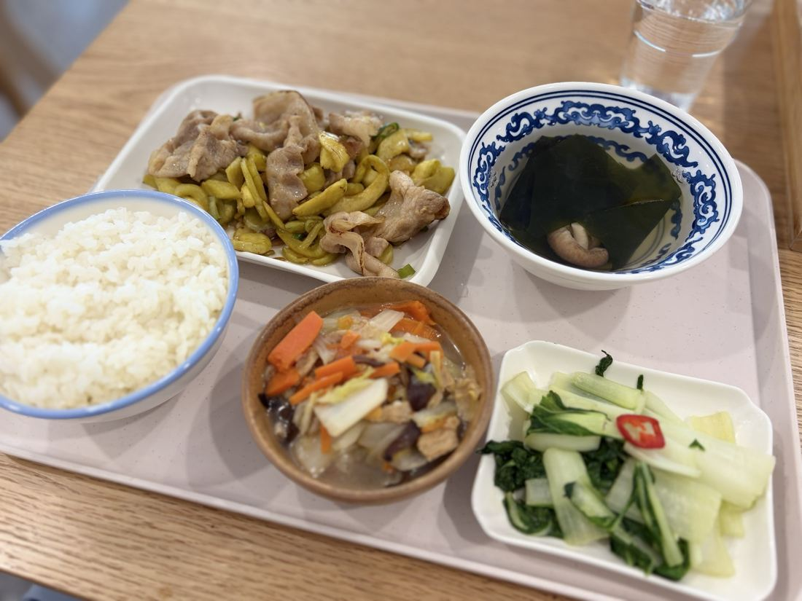
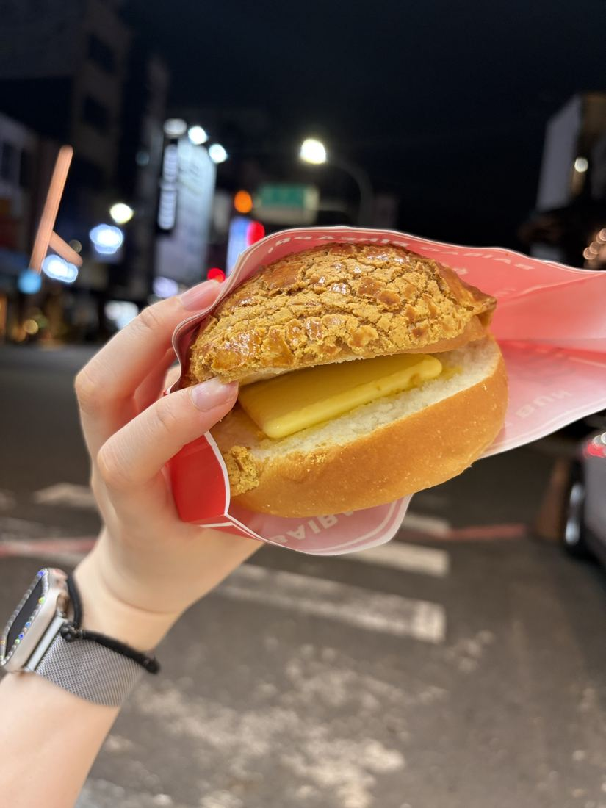
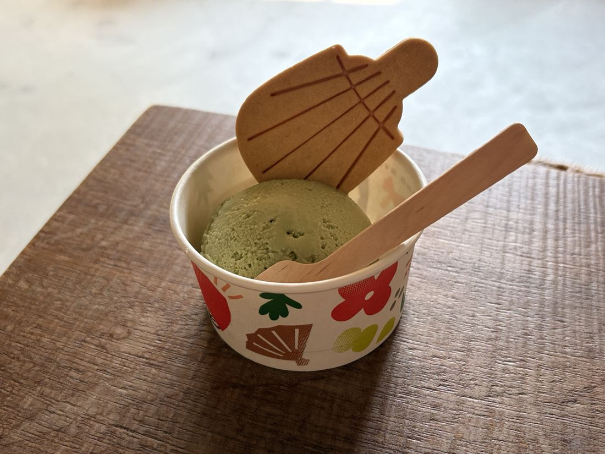
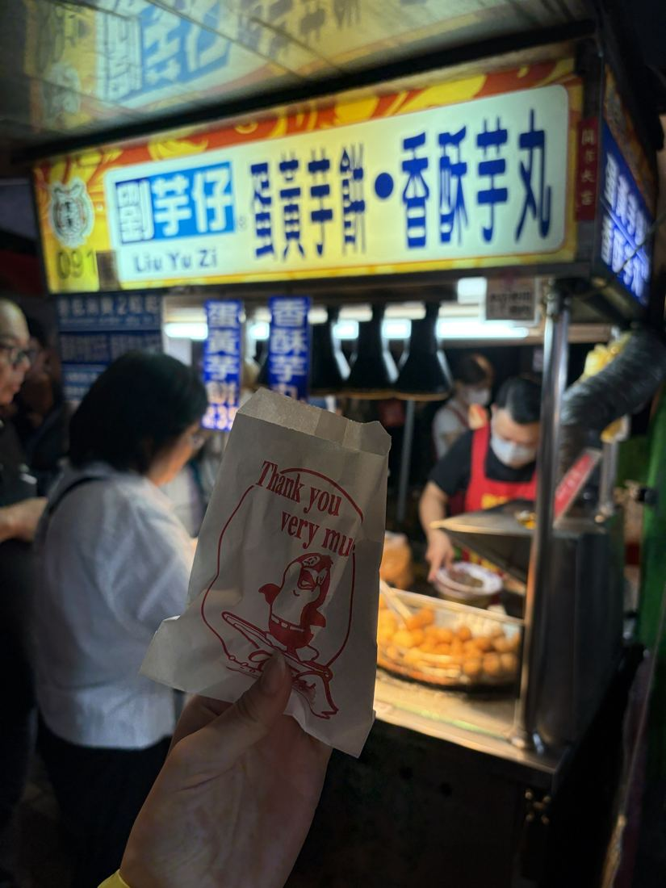
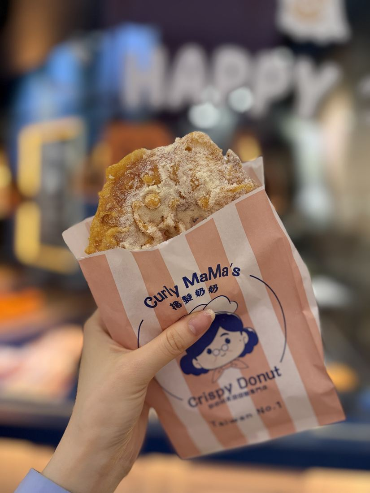
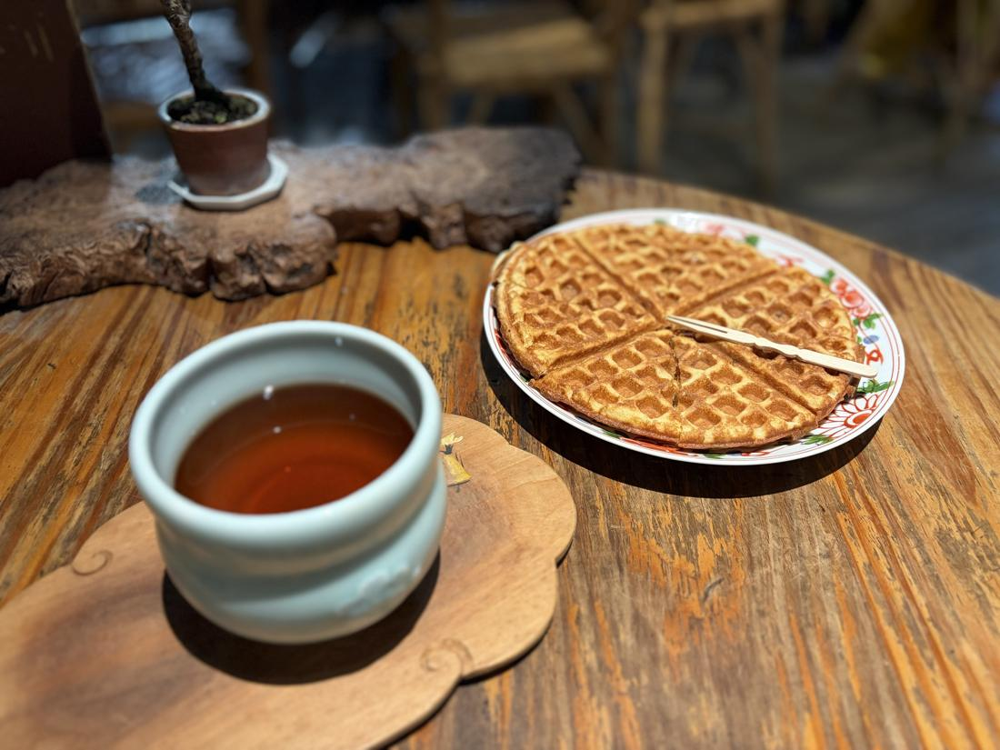

IT217 · 往路11/6 金 · tigerlight
HND
5:00
羽田 第3ターミナル
約3h55
TPE
7:55
桃園 第1ターミナル
平和島 3:10発バス → T3 3:30着カウンター締切 4:15
毎晩どこで寝るか。宿は2つとも予約確定、女性専用ドミトリー。
今日の服行きはVISのブルーのフリルカラーブラウス（長袖・BEST!!）× 黒のフレアパンツ（MOUSSY）× ウィンドブレーカー。桃園空港に着いたら、入国審査のあとトイレで白のギャザートップス（CASA FLINE）に着替える。足元はNIKEのスニーカー
今日の服白のポロ襟リブニット（MISCH MASCH）× 白のハイウエストミニフレアスカパン（TITTY&CO.）。美術館の冷房用にウィンドブレーカー
今日の服白の2WAYボウタイペプラムブラウス（dazzlin・長袖）× ネイビーのタックワイドパンツ（SWINGLE）。お廟と高鐵ではウィンドブレーカーを羽織る
今日の服昼は11/8と同じ白のボウタイペプラム（dazzlin）× ネイビーのタックパンツ。20:30に宿で荷物を受け取るときに、行きと同じ服（ブルーのブラウス×黒フレア）に着替える。淡水の夕方はウィンドブレーカー
今日の服11/5と同じ服（VISのブルーのブラウス × 黒のフレアパンツ × ウィンドブレーカー × NIKEのスニーカー）。朝4時の羽田は10°前後
7:55 桃園着入国 → トイレで半袖に着替え → ATM → 空港MRT
1932年開業のレトロ百貨店
手動式の古いエレベーターと屋上の神社。台南の雑貨やお土産も。
宿から 徒歩5分11:00〜21:00
旧台南州庁（1916年）
日本統治時代の役所を修復した洋館。中央の塔とドームが目印。
宿から 徒歩10分入場無料・月休
日本時代の木造家屋の茶屋
畳の席で台湾茶を淹れてもらえる。お餅やワッフルなどの甘味も。小さな茶器や茶葉も買える。
宿から 徒歩12分10:00〜18:00（月休）
縁結びの月下老人がいる2つのお廟
赤崁樓のすぐそば。屋根や柱の細かな彫刻と、色鮮やかな装飾を見比べて。
宿から 徒歩13分開門時間は廟ごとに確認
オランダ時代の城跡
城跡に建つ中国風の楼閣。夜のライトアップもきれい。
宿から 徒歩13分8:30〜21:00
地元っぽい夜市
水・金・土だけ開く夜市。観光客が少なめで、屋台とゲームがぎゅっと集まる。11/6（金）の夜に。
宿から 徒歩30分水・金・土 17:00〜24:00
台湾でいちばん古い孔子廟
赤い壁と緑の多い中庭。朝の静かな時間がおすすめ。
宿から 徒歩7分8:30〜17:30
2館は坂茂の設計
白い五角形の屋根が重なる2館と、旧警察署を生かした1館。セット券あり。
宿から 徒歩9分10:00〜18:00（土〜21:00、月休）
藤本壮介の設計
台南の路地を縦に積み上げた8階建て。階段をのぼって迷い込む建築。
宿から 徒歩7分土日 11:00〜19:00（火休）
MVRDVの設計
古い地下街を壊してつくった水辺の広場。足を浸して涼める。
宿から 徒歩11分9:00〜21:30（火休）
提灯の灯る古い通り
古い家並みに赤い提灯。小さなバーや雑貨屋さんが並ぶ。
宿から 徒歩14分夕方〜夜がおすすめ
関羽をまつるお廟
商売の神様・関羽をまつる。お線香を使わない、静かで清潔なお廟。
MRT行天宮駅から 徒歩5分4:00〜22:00
縁結びの神様と問屋街
月下老人で有名な小さなお廟。前の通りは乾物・お茶・雑貨の問屋街。
MRT大橋頭駅から 徒歩10分7:00〜19:00
旧台湾総督府鉄道部（1919年）
日本統治時代の鉄道の本部を修復した博物館。赤レンガと木造の庁舎そのものも見どころ。
MRT北門駅から 徒歩5分9:30〜17:00（月休）・100元
酒造工場をリノベーション
レンガ倉庫に雑貨店・ギャラリー・カフェ。入場無料。タピオカ発祥の店のひとつ「春水堂」の華山店もここに。
MRT忠孝新生駅から 徒歩5分屋外は24時間・店は11:00ごろ〜
1919年の赤レンガ建築
日本統治時代の総督府。平日の午前は中を無料で見学できる。パスポートを持って。
MRT台大醫院駅から 徒歩7分平日9:00〜12:00（11:30までに入場）
鉄工所の路地とカフェ
古い鉄工所が残る路地に、小さなカフェや雑貨店が増えている。中山駅前の「誠品生活南西」（本屋さん・台湾デザイン雑貨）もすぐそば。
MRT中山駅から 徒歩3分店ごとに確認
夕日の港町
川が海に流れ込む港町。老街を歩いて、川沿いで夕日を見る。
MRT淡水駅（終点）から 徒歩5分夕日は17:00ごろ
見どころはほぼ全部、宿から歩いて15分以内。道は大通りだけをざっくり描いています。
色つきの線はMRT（地下鉄）、灰色の線は大通り、左の青は淡水河。宿は台北駅のすぐ北。
食べたら「スタンプを押す」。値段はだいたいの目安（1元≈4.9円）。★は、もちもち・点心・甘じょっぱい好きのさやか向けチャレンジ。
台湾のおにぎり
もち米で揚げパン・肉でんぶ・卵などを包んだ、手でにぎる大きなおにぎり。ボリューム満点。
おすすめされた一品。もち米好きにぴったり。半分の量で頼める店も
お酢で固めたしょっぱい豆乳スープ
おぼろ豆腐のような、ゆるっとした食感。日本の台湾朝ごはん屋さんでも定番なので、食べたことがあるかも。本場で答え合わせを
タピオカミルクティー
本場のタピオカ。甘さ（糖）と氷（冰）の量を選べる。おすすめされた春水堂は華山1914の店で（10:30〜21:00）。台北駅の地下にも店がある。

台北旅で出会った五桐號の、緑茶ゼリー入り
クリスティとおそろいで、西門を歩きながら

台南旅で出会った台湾の今川焼き
コーンと肉でんぶの、甘じょっぱい焼き菓子

台南旅で出会った瓜の漬物と豚肉の炒めもの
台湾家庭料理のお店で。配菜2品とスープつき

台南旅で出会った冷たいバターをはさんだパイナップルパン
アツアツのパンに冷たいバター。台寶で

台南旅で出会った南埕衖事のアイス
抹茶味に、うちわ形のクッキーつき

台北旅で出会ったタロイモの揚げ菓子
寧夏夜市の劉芋仔。サクサクで中はとろり

台北旅で出会ったカリカリのドーナツ
寧夏夜市の近くで

台南旅で出会った十八卯茶屋のお茶とお菓子
めっちゃおいしかった
💳 カードで払うときに「日本円で払いますか？」と聞かれたら、台湾ドル（TWD）を選ぶ。言葉なら「台幣（タイビー）」。日本円を選ぶと手数料が上乗せされて損します
まわりをタップで閉じる
例：「半糖少冰（バンタン シャオビン）」＝甘さ半分・氷少なめ。迷ったら半糖がちょうどいい甘さ。
⏰朝だけ・作りたて
🥩朝が新鮮・売り切れたら閉店
👥1品専門・行列は回転が速い
🔥焼きたて・揚げたてだけ
🧼温度と衛生が大事な料理
🧊氷ものは夜市より専門店で
現金は4,000〜5,000元。夜市・悠遊カードのチャージ・Star Hostelの支払い用。カード払いは「台湾ドル」を選ぶ。
航空券・U.I.Jの宿・平和島などの前払いは上の「予算」のとおり。MRT・バス（悠遊カード）、空港MRT、11/8のクリスティとの晩ごはん（ごちそう）は入っていません。抜けているものは、カード明細とメモで足していきます。
晩ごはんの尬鍋はクリスティのごちそう
早鳥は人気の週末だと早く売り切れます。自由席は指定席より少し安く、その日の便ならどれでも乗れるので、入国の時間が読めない11/6にぴったりです。日曜で混む11/8は、座れないと1時間45分立ちっぱなしになるので指定席に。次の旅では、乗車日の28日前の予約開始日に早鳥を取るのがコツです。
行天宮・霞海城隍廟などのお廟、河楽廣場、神農街、林百貨（入館無料）、台北表演芸術中心の見学ルートは無料です。霞海城隍廟では縁起茶も無料でいただけます。
2館（坂茂の白い屋根の建物）と1館（旧警察署）は孔廟の近くで道を挟んで向かい合っています。月曜休館、土曜は21時まで。
入場料の一部が館内のスイーツやドリンクに使えるので、おやつ休憩をここにすれば無駄がありません。火曜休み、屋外の階段エリアは雨の日は閉鎖。
入場料は70元。修復工事で入れる建物が限られている時期があります。夜はライトアップがきれいなので、外から眺めるだけでも雰囲気は楽しめます。
安平古堡・赤崁樓・安平樹屋・億載金城の4つから2つ選べる券です。安平エリアに行かない今回の旅程では元が取れません。
カード払いで「日本円で払いますか？」と聞かれたら台湾ドルを選びます。日本円を選ぶと、手数料が上乗せされた不利なレートになりがちです。両替も日本でするより現地のATMのほうがレートが良いことが多いです。
ピーナッツトーストや豆漿・蛋餅は50元前後。台南の牛肉湯は少し高め（120〜200元）なので、1回だけのご褒美にすると予算内に収まります。
台湾の電話番号がないと会員登録ができず、クレジットカードでの1回利用になります。台南の見どころは宿から徒歩15分圏なので、歩きとバスで十分です。
配る用の大袋と、個別に渡す小箱の組み合わせ。お店で値段を見て、高くなったら袋の数で調整
奇美の小箱は150元。今日見たお店で買うか、明日の奇美博物館で。時之幸福のエッグロール小袋（69〜109元）も、ひとみさんに足したくなったら。ひとみさんの誕生日プレゼントは、帰国後にDAYLILY（漢方のお店）で。お肉入りのもの（ジャーキー・肉入り月餅）は日本に持ち込めない。預け荷物がないので、液体のお土産は買わない
横にスワイプして見られます
ブルーのフリルブラウス
× 黒フレア
＋ウィンドブレーカー
桃園空港で半袖に着替え
白ギャザートップス
× 黒のフレアパンツ
（空港で着替えたあと）
白ポロ襟リブニット
× 白のミニフレアスカパン
＋ウィンドブレーカーをバッグに
白のボウタイペプラム
（dazzlin）
× ネイビーのタックパンツ
＋夜はChristyとごはん
11/8と同じ
ボウタイペプラム × ネイビー
＋淡水ではウィンドブレーカー
11/5と同じ服
ブルーのブラウス × 黒フレア
＋ウィンドブレーカー
黒フレアは11/5・6・10、白ミニは11/7、ネイビーは11/8・9。白ミニは中がパンツのスカパンなので、低い椅子でも安心
お廟は服装の決まりはほぼないけれど、総統府はノースリーブ・短パンは避けると安心。パジャマは別に1セット。
① 今日つめる → ② 出発の朝につめる → ③ 着ていく の順。色のラベルは入れるバッグ
2つ合わせて10kgまで。帽子はかぶって乗る
水は小さめのペットボトルを買って、駅や美術館の給水機で足す。宿に置いていくもの：三井住友カード・予備の日本円・充電器・化粧品
行きも帰りも預け荷物なし。液体は1つ100ml以下で、ぜんぶ1Lの透明袋に。液体のお土産は買わない。